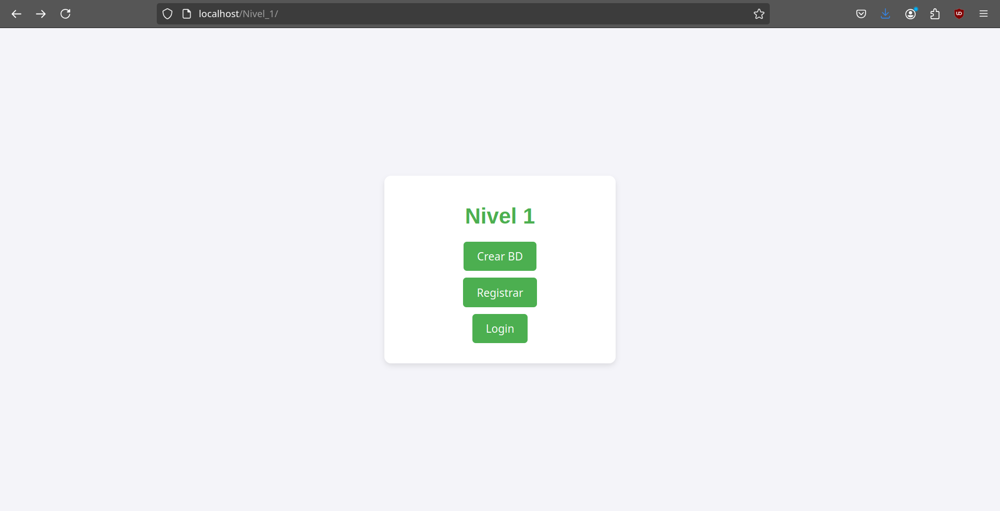
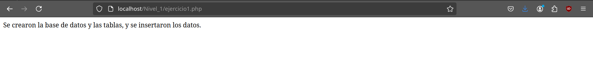
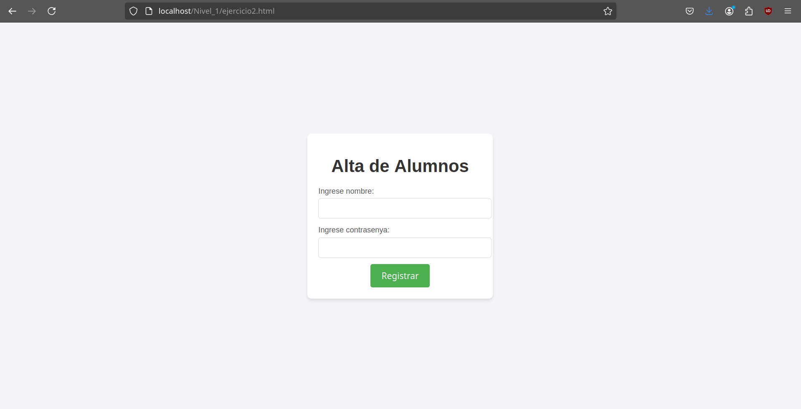
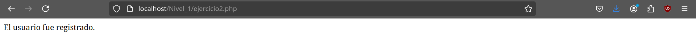
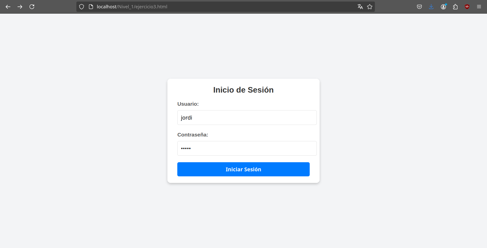
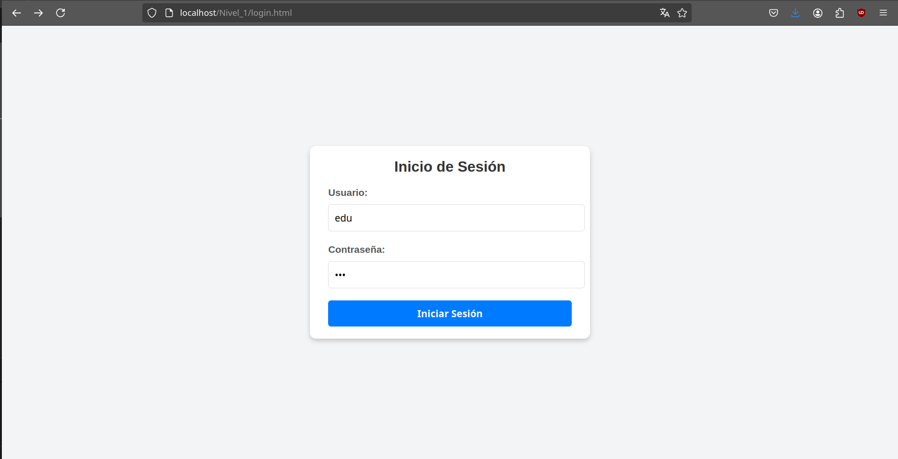
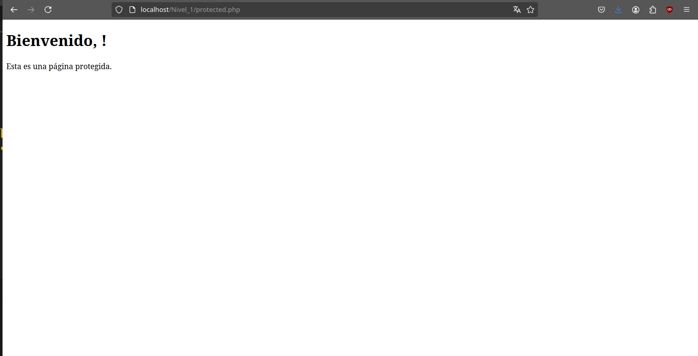
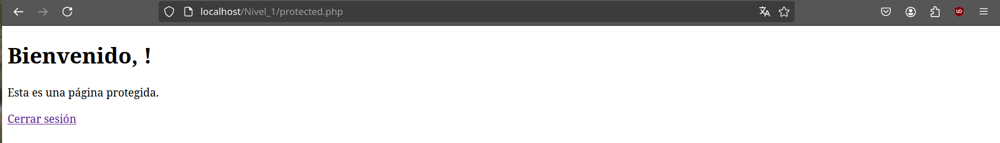
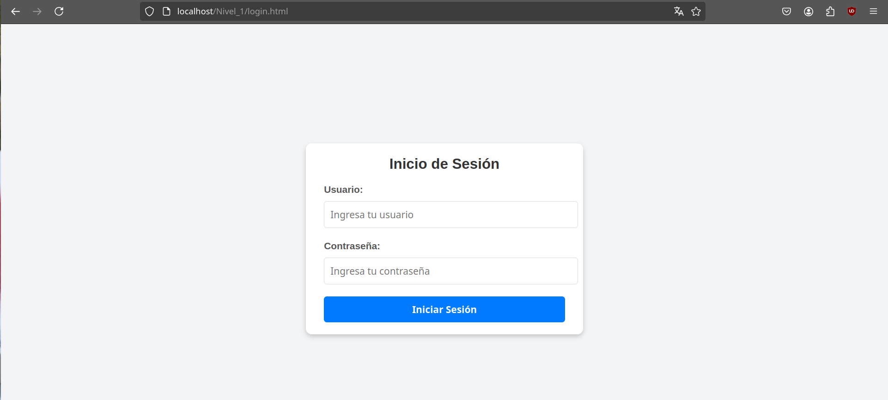

Proyecto 1 PHP - Sistema de autenticación de usuarios en PHP y MYSQL¶
Nivel 1¶
Descripción¶
-
Crear una base de datos: Diseñar una base de datos MySQL para almacenar la información de los usuarios.


-
Formulario de Registro: Crear un formulario en HTML para que los usuarios puedan registrarse.


-
Validación y Almacenamiento: Utilizar PHP para validar los datos del formulario y almacenarlos en la base de datos.
Con el codigo de php validamos los datos del formulario y los almacenamos en la base de datos.
-
Formulario de Inicio de Sesión: Crear un formulario de inicio de sesión en HTML.

-
Autenticación: Utilizar PHP para verificar las credenciales del usuario y permitir el acceso a una página protegida.


-
Control de Sesiones: Implementar el manejo de sesiones en PHP para mantener al usuario autenticado.
Para hacer un control de sesiones utilizarem la variable de $_Sessio.
Tendremos que pasar la variable de sessio cuando basura login y despres tendremos que comprobar en la pagina redirigida de login.

Y despres haremos un logout.php para cerrar la sessio.

I como podemos ver al clic en cerrar session volvemos al login.
Nivel 2¶
Descripción¶
Crear una aplicación para gestionar bases de datos (SGBD) tipo PHPMyAdmin con las siguientes características:
-
Página de Inicio: Mostrar un mensaje de bienvenida donde se muestre el formulario de inicio de sesión, si el usuario no está autenticado. Si el usuario está autenticado, mostrar un mensaje de bienvenida y un botón para cerrar sesión.
-
Menú de Navegación de usuarios: Crear un menú de navegación con las opciones: Inicio, Perfil, Usuarios y Salir.
-
Menú de Navegación de las bases de datos: Crear un menú de navegación con las opciones: Bases de datos, Tablas, Consultas, Importar y Exportar, etc.
-
Perfil de Usuario: Mostrar la información del usuario autenticado.
-
Gestión de Usuarios: Crear una tabla con la lista de usuarios registrados en la base de datos.